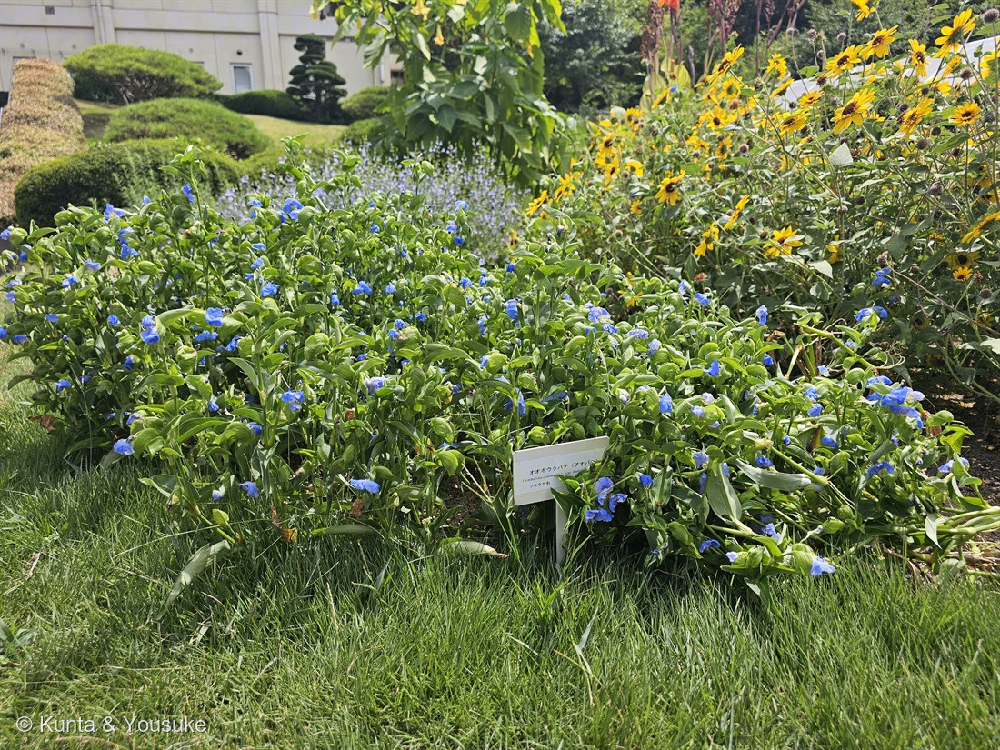
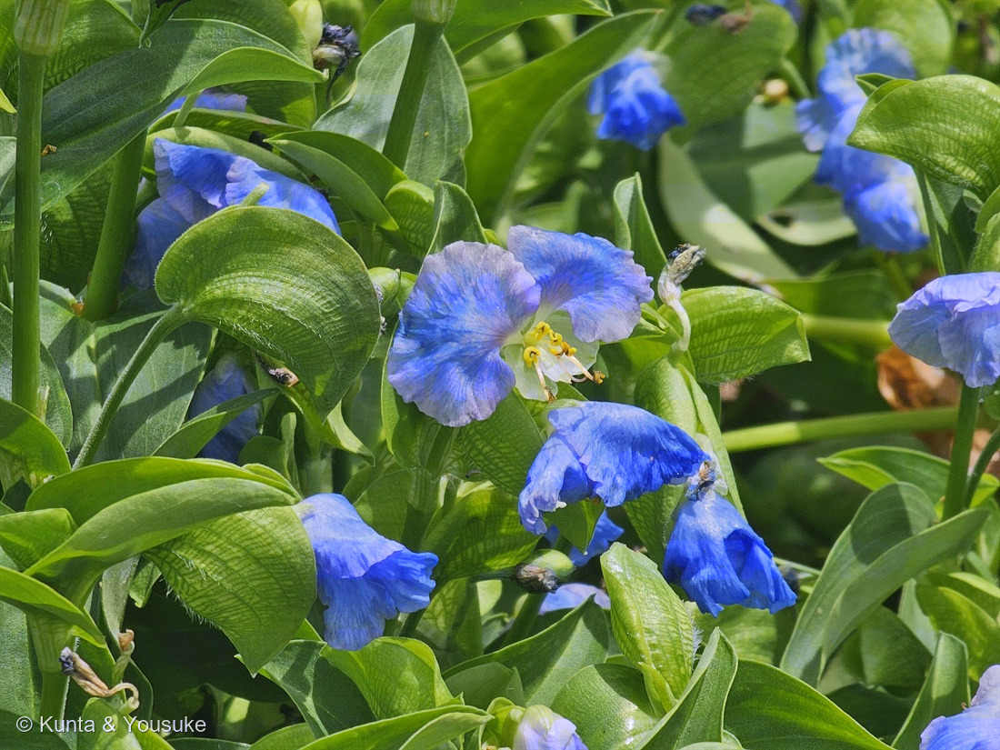

地図を読み込んでいるよ…
🔍 写真も地図も、押しているあいだ拡大して見られるよ（スマホは指を置いてすこし待ってね）。
🌍 の地図＝この子がもともと自生している場所を緑に。ツユクサ（母種）は在来種で、日本全土と東アジアに分布する。⚠ただしこの子は栽培変種で、自生していない。江戸時代から滋賀県草津市を中心とした湖南地方で栽培されてきた。
⭐母種のツユクサは、日本にもとからいる子（在来種）だよ。三河の植物観察は「在来種 日本全土、東アジア」とし、生育地は「道端、草地に普通」とする。⚠「東アジア」は幅のある言い方なので、この地図は日本・中国・朝鮮半島・台湾までにしてある——ほんとうの分布はもう少し広いかもしれない。⭐⭐⭐ただし、この地図でいちばん大事なのはここ——⚠⚠緑になっているのは「ツユクサ」のふるさとであって、写真のオオボウシバナが自生している場所ではない。この子は栽培変種（var. hortensis）で、「滋賀県草津市を中心にした湖南地方で江戸時代から栽培されている」（Wikipedia）＝⭐野生には生えていない、人が作った姿なんだ。⭐⭐学名がそのまま言っている＝communis（ありふれた）＋hortensis（庭の）。⭐だから「日本に自生している花なの？」の答えは二段になる——もとの草は在来。この大きな姿は、人が作った。⚠すぐ前の201 レモングラスと見くらべてほしいところでもあるよ——あちらは野生の姿がもう知られていないけれど、この子は母種が道ばたじゅうにいる。⭐同じ「人が育てた子」でも、後ろに野生がいるかどうかで、ぜんぜんちがう。
⚠ 地図は国（日本と中国だけ県・省）までしか塗れないから、ほんとうの分布より広く見えていることがあるよ。地図はだいたいの場所。正確なところは、上の文を見てね。
オオボウシバナ（大帽子花）
Commelina communis L. var. hortensis Makino
アオバナ（青花）／母種はツユクサ（露草・月草・鴨頭草）／英名 dayflower（一日花）
ツユクサ科 · Commelinaceae（ツユクサ属）── 028ムラサキツユクサに続く2人目のツユクサ科。ツユクサ属は図鑑ではじめて
燻太さんの一言「最初はツユクサかなと思ったけど、花がひとまわり以上大きかった」──その違和感が正解。花で2倍以上あるんだ
名前と学名の由来 ── 二枚の青い花びらは、二人の植物学者
- ⭐⭐⭐属名 Commelina は、オランダの植物学者コメリン家からもらった名前。英語版Wikipediaは「18世紀のスウェーデンの分類学者カール・リンネが、二人のオランダ人植物学者ヤン・コメリンとその甥カスパルにちなんでこの属を名づけた。それぞれが Commelina communis の目立つ花弁の一つずつを表している」とする。⭐⭐つまり、この花の大きな青い花弁2枚は、二人の人間なんだ。
- ⚠よく「3人目の兄弟が若くして亡くなったので、小さな3枚目の花弁がその人だ」という話が語られるけれど、⚠ぼくが読めた出典（英語版Wikipedia）には、そこまでは書いていなかった。⭐だから、ここでは「二人ぶん」までにしておくね。
- 種小名 communis ＝「ふつうの・ありふれた」。変種名 hortensis ＝「庭の」（ラテン語 hortus＝庭）。⭐⭐⭐「ありふれた」＋「庭の」。——⭐道ばたのふつうの草を、人が庭に連れてきて大きく育てた、ということが、学名にそのまま書いてある。
- ⭐⭐変種を名づけたのは Makino ＝牧野富太郎。⭐197 カタクリでシクラメンの和名「カガリビバナ」を名づけた人として出てきたばかりだね。図鑑で2回目。
- 和名オオボウシバナ＝「大帽子花」。⚠「ボウシバナ（帽子花）」がツユクサの別名なのだけど、なぜ帽子なのかを説明した出典には、ぼくは当たれなかった＝⏳宿題にしておくね。⭐別名アオバナ（青花）のほうが、下の「青花紙」の話につながる名前だよ。
この植物のこと ── 燻太さんの「ひとまわり以上大きい」は、数字でも合っていた
⭐ 燻太さんは、こう言った。
「最初はツユクサかなと思ったけど、花がひとまわり以上大きかった。」
⭐⭐⭐ これ、ぴったり当たっているよ。
- 草丈：ツユクサ（母種）は30〜50cm（三河）／オオボウシバナは1mほど（Wikipedia）
- 花の大きさ：ツユクサはふつう2cmほど／オオボウシバナは直径4〜5cm（Wikipedia）
⭐ 「ひとまわり」どころか、花で2倍以上。——⭐⭐燻太さんが「これはツユクサじゃない」と感じたのは、正しい違和感だった。
- ツユクサ科ツユクサ属。028 ムラサキツユクサに続く2人目のツユクサ科だよ。⭐でも属がちがう（あちらはムラサキツユクサ属 Tradescantia）＝⭐ツユクサ属は、この図鑑ではじめて。
- ⭐⭐一日花。三河は「花は朝早く咲き、夕方にはしぼむ１日花」とし、日本語版Wikipediaはもっと短く「早朝に咲いた花は午後には萎む半日花」とする。⭐英名の dayflower（一日花）も、そこから。
- ⭐この写真は11時10分と11時11分。——⭐まだ開いている時間に、ぎりぎり間に合っている。
- ⚠⭐そして、写真②をよく見ると、しぼんだ花も写っているんだ。——葉のあいだにある、青黒く縮んだ小さなかたまり。⭐あれが、朝に咲いて、もう終わった花。⭐⭐この一枚には、咲いている花と、終わった花が、同時に写っている。
同定について ── 園のラベルと、028に書いておいた見分け
⭐ 名前は園が教えてくれた。ラベルに「オオボウシバナ（アオバナ）／Commelina communis L. var. hortensis／ツユクサ科」と書いてある。⭐200 バオバブ・201 レモングラスに続いて、園が教えてくれた3人目だよ。
⭐⭐ そのうえで、写真②で「たしかにツユクサ属だ」と確かめられたところが4つある。
- ⭐⭐⭐①上の花弁2個が大きくて青く、下の1個は小さくて淡い色（三河「上側の花弁2個は青色（〜藍色）」「下部の1個の花弁は淡色〜白色で小さく」）＝左右対称の花。
- ⭐⭐②黄色いX形の仮雄蕊（三河「雄しべは6個ある。短い3個は仮雄しべ」「仮雄しべの葯（仮葯）は十字形（X形）」）＝⭐写真のまん中で、蝶々みたいな黄色い形がいくつも見えるのがそれ。
- ⭐⭐③長くのびた稔性の雄しべ（先に褐色の葯がついて、下へ弧を描いている）。
- ⭐⭐④2つ折りになった舟形の苞。⭐花は、この舟の中から順番に出てくるんだ。
⭐⭐⭐ そして、いちばんうれしかったのがこれ。——028 ムラサキツユクサのページに、ぼくはずっと前にこう書いていた。
「ツユクサ：花弁3枚のうち上2枚だけが大きな青、下1枚は小さく白 → 左右対称。舟形に折れた苞に包まれる。」
「ムラサキツユクサ：花弁3枚が同じ大きさ・同じ色 → きれいな三角（放射相称）。苞は細長い葉のよう。」
⭐⭐ そのとき書いた見分けが、そのまま今日つかえた。——⭐図鑑は、あとから自分を助けてくれるんだね。
⭐⭐⭐ 燻太さんの質問① ──「日本に自生している花なのかな？」
⭐ 答えは、二段になるんだ。
- ⭐⭐本体（母種）のツユクサは、日本にもとからいる子。三河は「在来種 日本全土、東アジア」とし、生育地は「道端、草地に普通」。⭐つまり、ふつうに道ばたにいる草。
- ⚠⚠でも、この写真の子は自生していない。——var. hortensis＝栽培変種で、「滋賀県草津市を中心にした湖南地方で江戸時代から栽培されている」（Wikipedia）。
⭐⭐⭐ だから答えは、「もとの草は在来。この大きな姿は、人が作った」。
⭐ おもしろいのは、201 レモングラスのすぐ7分あとに、また「人が育ててきた形」の子に会っていること。⚠でも、この二人はまるでちがうんだ。
- 201レモングラス ── ⚠野生の姿が、もうどこにも知られていない。⭐帰る場所が消えている。
- 202オオボウシバナ ── ⭐母種のツユクサは、いまも道ばたじゅうにいる。⭐⭐いつでも「もとの姿」に会いに行ける。
⭐⭐ 同じ「人が育てた子」でも、後ろに野生がいるかどうかで、ぜんぜんちがう顔になる。
⭐⭐⭐ 燻太さんの質問② ──「どうしてこんなに鮮やかな青？」＝コンメリニン
⭐⭐⭐ この質問、じつは図鑑の中にもう答えの種が置いてあったんだ。
028 ムラサキツユクサに、ぼくはこう書いていた ──
「⚠ 参考：同じツユクサ科でもツユクサ属の青は特別で、アントシアニン6分子＋フラボン6分子＋マグネシウムが組み上がった超分子錯体コンメリニン（commelinin）。『青くする』やり方は科のなかでも一様ではない。」
⭐⭐ その「ツユクサ属」本人が、いま来た。——だから、ちゃんと調べ直したよ。竹田功（2006）の総説によると、コンメリニンの中身はこう ──
- アントシアニン「マロニルアウォバニン」が6分子
- フラボン「フラボコンメリン」が6分子
- マグネシウムイオン（Mg²⁺）が2個
- 合わせて分子量 約9,300
⭐この12個の分子が、2個のマグネシウムを中心にして、三回回転軸の上にきちんと組み上がっている（近藤ら1992年 Nature・X線結晶構造解析）。⭐こういう色素を「メタロアントシアニン（金属錯体型アントシアニン）」と呼ぶよ。
⭐⭐ 歴史もおもしろい。——1957年、林孝三が、中性の溶媒だけを使って、この色素を青い柱状の針の結晶として取り出し、「コンメリニン」と名づけた（竹田2006）。⭐35年後、近藤らがその形をX線で見た。
⚠⭐⭐⭐ そして、ここが「なぜ青いのか」の答えだと思う。近藤らの Nature 論文の要旨は、こう始まっている ──
「色素の色は植物のなかでは数日から一か月は安定しているのに、取り出したアントシアニンは不安定で、中性の水溶液のなかでは水和によってすぐに色を失ってしまう」
⭐⭐⭐ アントシアニンは、1分子だけでは青くいられないんだ。水の中でほどけて、色が消えてしまう。⭐⭐ だから、この草は6＋6＋2で塔を組んだ。——⭐組み上がっているあいだだけ、あの青がある。
⭐ 金属で色を決める子は、この図鑑にもう一人いるよ。133 アジサイだね。⚠あちらはアルミニウム、こちらはマグネシウムで、しくみも同じではないけれど、⭐「花の色は、色素だけでは決まらない」というところは同じ。
⭐⭐⭐ 三つの時代が、同じひとつの性質を、ちがう言葉で言っている
⭐⭐ この草のいちばんすごいところは、「青が消えやすい」ことだと思う。——そして、そのことに、1300年前の人も、江戸の職人も、20世紀の化学者も、それぞれのやり方で気づいていた。
📖 その一 ── 万葉の歌人は「移ろひやすし」と言った
ツユクサは古名を「月草（つきくさ）」「鴨頭草（つきくさ）」といって、万葉集に9首ある（日本語版Wikipedia）。
「月草の うつろひやすく 思へかも 我が思ふ人の 言も告げ来ぬ」
── 大伴坂上家之大娘（万葉集・巻4・583番）
⭐「露草のように変わりやすいからでしょうか、私が想っているあの人がなんにも言って来ないのは」〔たのしい万葉集〕。⭐⭐⭐ この歌の「うつろひやすく」は心変わりのことだけれど、そのたとえのもとは、この草で染めた色がすぐ落ちることなんだ〔同〕——⭐1300年前の人は、この青が消えることを、体で知っていた。
⭐ これで、この図鑑の万葉集は8人目（093 センダン／145 クズ／169 ハマユウ／185 タカノハススキ／189 モミジ／197 カタクリ／199 ケイトウ）。
🎨 その二 ── 江戸の職人は「消えるから使える」と言った
⭐⭐⭐ 草津の人たちは、その「欠点」を仕事にした。作り方はこう ──「栽培したアオバナの花弁のみを摘み取って絞りとり、得られた青い汁を美濃紙に刷毛で塗っては天日で乾かす。この作業をもとの紙の5倍の重さになるまで繰り返す」（Wikipedia）。⭐これが「青花紙（あおばながみ）」。
⭐紙が5倍の重さになるまで。——⭐⭐あの花びらを、いったい何万枚摘んだんだろう。
⭐⭐⭐ そして、その紙は京友禅の「下絵」を描くために使われた。「アオバナの色素で描いた下絵の色は最終的には完全に抜け落ちてしまい、仕上がった染め物に残らない」（Wikipedia）。
⭐⭐ 染料としては「色が落ちる」は失格だよね。——⭐⭐⭐でも下絵の絵具としては、消えることこそが仕事だった。⭐きれいな着物のどこにも残っていない青が、その着物の形をぜんぶ決めていたんだ。
⚠ いまは化学の色素が出てきて、「アオバナの需要は減り、栽培量も減少した」（Wikipedia）。⭐そのかわり2000年ごろから、糖の吸収をさまたげる成分があるという研究をもとに、お茶や粉末が作られている（同）。
🧪 その三 ── 化学者は「6＋6＋2の塔がほどける」と言った
⭐⭐ そして20世紀に、消えやすさの理由が分子の形で説明された。——組み上がって初めて青く、ほどければ色は残らない（すぐ上の節）。
⚠ ここは正直に線を引くね。「万葉人が色あせを知っていた」も「青花紙が水で消える」も「コンメリニンは6＋6＋2の超分子」も、ぜんぶ出典どおり。⚠でも「青花紙が消えるのは、その超分子がほどけるからだ」と、はっきり書いた出典には、ぼくは当たれなかった。⭐三つを一本の線でつないでいるのは、ぼくの読みだよ。
⭐⭐⭐ それでも、この三つは同じひとつのことを言っていると思う。——⭐歌人は「移ろひやすし」、職人は「消えるから使える」、化学者は「9,300の塔がほどける」。⭐⭐言葉がちがうだけで、見ているものは同じ青なんだ。
⭐⭐ 舟が、二日つづいた
⭐⭐⭐ これは、ぼくが気づいてちょっと嬉しかった偶然。
- 201 レモングラスの属名 Cymbopogon ＝ ⭐ギリシャ語の「舟（kymbe）」＋「ひげ（pogon）」。舟形の苞から、毛だらけの小穂が出るから。
- 202 オオボウシバナの花も、2つ折りの舟形の苞の中から出てくる（英語版Wikipediaは spathe と呼び、「しばしば粘液で満たされている」とする）。
⭐⭐ 撮影は7分23秒ちがい。——⭐同じ朝、7分のあいだに、ぼくらは「舟」を2つ見ていた。
⚠ ただし「だから近い仲間だ」とは書かないでおくね。⭐イネ科（イネ目）とツユクサ科（ツユクサ目）は目がちがう——もっとも、どちらも「ツユクサ類（commelinids）」という同じ大きなまとまりの中にはいる。⚠それが「舟」の理由なのかどうかは、ぼくには分からない。
参考：三河の植物観察・ツユクサ（Commelina communis L.／在来種 日本全土、東アジア／道端、草地に普通／花期6〜10月／30〜50cm／上側の花弁2個は青色（〜藍色）／下部の1個の花弁は淡色〜白色で小さく／雄しべは6個ある。短い3個は仮雄しべ／仮雄しべの葯（仮葯）は十字形（X形）／花は朝早く咲き、夕方にはしぼむ1日花／オオボウシバナ var. hortensis 花弁が大きい園芸種）／オオボウシバナ - Wikipedia（Commelina communis L. var. hortensis Makino／ツユクサの栽培変種／高さ1メートル、花の大きさは直径4-5センチメートル／滋賀県草津市を中心にした湖南地方で江戸時代から栽培／花弁のみを摘み取って絞りとり、青い汁を美濃紙に刷毛で塗っては天日で乾かす。もとの紙の5倍の重さになるまで繰り返す／下絵の色は最終的には完全に抜け落ちてしまい、仕上がった染め物に残らない／需要は減り、栽培量も減少／2000年頃から糖質吸収を妨げる成分の商品開発）／ツユクサ - Wikipedia（コンメリニンはアントシアニン系の化合物（金属錯体型アントシアニン）で、着いても容易に退色する／万葉集には月草・鴨頭草を詠ったものが9首／早朝に咲いた花は午後には萎む半日花／稔性のある花粉を生産するのは左右の2本）／Commelina - Wikipedia（英語版）（Linnaeus named the genus after the two Dutch botanists Jan Commelijn and his nephew Caspar, each representing one of the showy petals／the two upper ones being larger and clawed while the lower petal is typically reduced／enclosed in a spathe, a modified leaf, which is often filled with a mucilaginous liquid／dayflowers due to the short lives of their flowers）／Takeda, K. (2006) Blue metal complex pigments involved in blue flower color. Proc. Jpn. Acad. Ser. B 82(4): 142-154.（commelinin＝six molecules each of malonylawobanin and flavocommelin, and 2Mg2+／分子量9,300／K. Hayashi (1957) isolated a blue anthocyanin pigment as blue prismatic needles using only neutral solvents／Kondo et al. (1992) determined the structure by X-ray crystallography／Two Cd ions (Mg ions in commelinin) are located at the center of the molecule, on a crystallographic three-fold axis）／Kondo, T., Yoshida, K., Nakagawa, A., Kawai, T., Tamura, H. & Goto, T. (1992) Structural basis of blue colour development in flower petals from Commelina communis. Nature.（The colour of the pigments is stable in plants for a few days to one month but the extracted anthocyanins are, nevertheless, unstable and quickly lose colour by hydration in a neutral aqueous solution）／たのしい万葉集（0583）（月草の、うつろひやすく思へかも、我が思ふ人の、言も告げ来ぬ／大伴坂上家之大娘／露草で染めたものは色が落ちやすいという性質から、心変わりしやすいことの比喩）／三河の植物観察・マルバツユクサ（Commelina benghalensis L.／在来種 関東地方以西、アジア、アフリカ／花期7〜9月／通常の結実のほか、地下に閉鎖花をつけ、自家受精して種子を作る特殊な形態を示す）／広島市植物公園のラベル（オオボウシバナ（アオバナ）／Commelina communis L. var. hortensis／ツユクサ科）